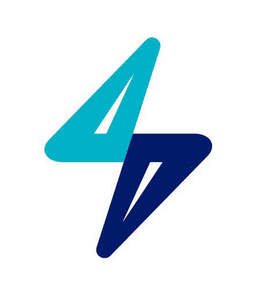

Trade Mark Journal No.2025/021 23 May 2025
UK00004201035 9 May 2025 (4,9,11,16,37,39,40,42)

- Class 4
- Industrial oils and greases, wax; lubricants; fuels and illuminants; gas and oil fuels; gas, gaseous fuels, oils; fossil fuels; electricity; electrical energy; electrical energy from renewable sources; electrical energy from non-renewable sources.
- Class 9
- Scientific, research, navigation, surveying, photographic, cinematographic, audiovisual, optical, weighing, measuring, signalling, detecting, testing, inspecting, life-saving and teaching apparatus and instruments; apparatus and instruments for conducting, switching, transforming, accumulating, regulating or controlling the distribution or use of electricity; apparatus and instruments for recording, transmitting, reproducing or processing sound, images or data; recorded and downloadable media, computer software, blank digital or analogue recording and storage media; mechanisms for coin-operated apparatus; cash registers, calculating devices; computers and computer peripheral devices; access control devices; alarm control panels; alarm installations; alarm sensors; alarms; analog-to-digital converters; apparatus and instruments for accumulating and storing electricity; apparatus and instruments for conducting electricity; apparatus and instruments for conducting, switching, transforming, accumulating, regulating or controlling the distribution or use of energy; apparatus and instruments for controlling energy consumption; apparatus and instruments for measuring electricity; apparatus for measuring, monitoring and analyzing electricity consumption; apparatus for monitoring electrical energy consumption; apparatus for monitoring heat consumption; apparatus for recording images; apparatus for recording, transmission, processing and reproduction of sound, images or data; apparatus for testing vehicle transmissions; apparatus for transmission of communications; apparatus, equipment and instruments for measuring the efficiency, performance and consumption of car charger points; apparatus, equipment and instruments for measuring the efficiency, performance and consumption of gas boilers; application software; application software for controlling energy consumption; application software for mobile phones; application software for wireless devices; algorithmic trading software; machine learning software; downloadable computer programs using artificial intelligence for use in software development and machine learning; artificial intelligence software; artificial intelligence software for vehicles; batteries; battery charging equipment and apparatus; battery storage systems; boiler control apparatus; budget management and budget planning software; cables; carbon monoxide detectors; charging cables for electric cars; charging stations for electric vehicles; charging systems for electric powered vehicles; climate control system consisting of a digital thermostat; collaboration management software platforms; collaboration software; collaboration software platforms [software]; collaboration tools [software]; communication interface units; communication networks; communications apparatus; communications controllers; communications software for connecting global computer networks; computer hardware; computer software; computer software and downloadable mobile applications for monitoring, analysing and optimising energy consumption; computer software and hardware for remotely controlling and monitoring household devices, home electrical systems, and surveillance and security systems in homes; computer software for control, regulation and monitoring of charging systems for electric vehicles; computer software for controlling energy consumption; computer software for time control; computer software for use in meter reading, monitoring and reporting; computer software platforms; computer software that enables interaction and interface between electrical and electronic control devices; connection cables; controllers and regulators; data communications apparatus and software; data processing equipment; data processing software; data transmitting apparatus; downloadable application software for smartphones, laptops and computer tablets; downloadable application software for smartphones, laptops and computer tablets for remotely controlling and monitoring household devices, home electrical systems, and surveillance and security systems in homes; electric apparatus for charging vehicle batteries; electric battery chargers; electric car charging piles; electric control apparatus for automatic gates for car parks; electric control apparatus, systems, devices and installations; electric control devices for energy management; electric power consumption sensors, wireless transceivers, computer network interface devices and software for monitoring electrical energy systems, managing and analysing energy consumption information associated with electrical energy systems and detecting faults in electrical energy systems; electric thermostats; electrical and electronic apparatus and instruments for the control, regulation, monitoring and optimisation of energy management devices; electrical control apparatus for automatic gates for car parks; electrical meters; electricity measuring instruments; electricity storage apparatus; electronic and automatic access security apparatus; electronic devices and computer software that allow the sharing and transmission of data and information between devices for the purposes of facilitating environmental monitoring, control, and automation; electronic handheld and wearable devices for the receipt, storage and/or transmission of data; electronic publications, downloadable; electronic publications, downloadable, relating to energy supply, energy efficiency and related energy services; energy control devices; energy regulators; facial recognition and analysis software; financial planning and management software; fuel consumption meters; fuel metering systems; fuel consumption measuring apparatus; gas-flow meters; household energy measuring and monitoring apparatus; household energy saving and control apparatus; instruments and apparatus for measuring, monitoring and analysing energy consumption; interactive computer software accessible on computers and via mobile telephones; interface software; intruder detection systems and apparatus; leak detection apparatus; measuring devices; measuring, detecting, monitoring and controlling devices; meters; meters for measuring and monitoring energy; mobile apps; mobile communication terminals; mobile data communications apparatus; multi-channel sound processors; multiple control signal transmission units; network controlling apparatus; photovoltaic apparatus for generating electricity; plugs and adaptors; power supply devices for battery chargers; programmable control apparatus; programmable controls for lighting apparatus and instruments; remote control apparatus; remote control apparatus for lighting apparatus and instruments; remote control apparatus for use with heating, lighting, steam generating, drying, ventilating, air conditioning, water supply and security apparatus; remote controlled apparatus and instruments; room thermostats; security control apparatus; security video cameras and television monitors; sensors and detectors, motion sensors; sensors, detectors and monitoring instruments; smart meters; smart meters, namely meters for testing, displaying and reporting on-going energy usage; software and downloadable mobile applications in the field of energy management, optimisation and efficiency; software and mobile applications for the management of energy accounts, including bill payments, tariff and product selection, monitoring usage, reviewing statements and accessing customer services; software for controlling home and residential automation systems including heating, lighting, thermostats, air quality monitors and sensors, alarms and other safety equipment, locks, doorbells, cameras, and home monitoring equipment; software in the field of energy; software to control building access and security systems; solar panels; sound and picture recording apparatus; temperature control apparatus in the form of thermostats; temperature controllers; temperature controlling apparatus; temperature monitors [valves] for central heating radiators; thermal controls; thermal energy measuring apparatus; thermal sensors for use in thermostats; thermostat control apparatus; thermostats; third party search marketing software; vehicle battery charging apparatus and equipment; visual display units; wireless apparatus; wireless battery chargers; wireless communication apparatus; wireless communication devices for voice, data or image transmission; parts, fittings and accessories for the aforementioned goods.
- Class 11
- Apparatus for heating, lighting, steam generating, drying, ventilating, air conditioning, water supply and sanitary purposes; apparatus for controlling energy consumption in heating installations; apparatus for controlling temperature in heating installations, namely thermostatic valves [parts of heating installations]; automatic temperature regulators [thermostatic valves] for central heating systems, namely, thermostatic valves as part of heating installations; boilers; boilers being parts of central heating installations; central heating apparatus and installations; control devices for heating, lighting, steam generating, drying, ventilating, air conditioning, water supply and sanitary installations; electric central heating boiler systems; energy consumption control devices for heating installations; heat pumps for energy processing; heating, ventilating, and air conditioning and purification equipment (ambient); industrial treatment apparatus and installations; light installations; lightbulbs; lighting; radiator valves; solar energy collectors for heating; solar energy powered heating apparatus; solar energy powered heating installations; thermal storage apparatus [solar energy] for heating; thermal storage instruments [solar energy] for heating; wall heaters, convector heaters, water heaters, fan heaters, gas boilers, gas central heating systems, solar heating systems; parts and fittings for the aforementioned goods.
- Class 16
- Paper and cardboard; printed matter; bookbinding material; photographs; stationery and office requisites, except furniture; adhesives for stationery or household purposes; drawing materials and materials for artists; paintbrushes; instructional and teaching materials; plastic sheets, films and bags for wrapping and packaging; printers' type, printing blocks; advertising publications; bags and articles for packaging, wrapping and storage, of paper, cardboard or plastics; printed books, magazines, newspapers, and other paper-based media; printed matter, and stationery and educational supplies; printed publications in the field of energy; printed publications relating to energy supply, energy efficiency and related energy services.
- Class 37
- Construction services; installation and repair services; mining extraction, oil and gas drilling; charging of electric vehicles; cleaning of storage tanks; construction of station for charging vehicles battery on public roads; construction, repair and maintenance of energy-using installations; electrical repairs, installation and contracting services for residential and commercial wiring or electrical apparatus, appliances, stereo components, and television components, electrical panels, electrical outlets, switches and light fixtures; electrician services; installation and maintenance of bolts, locks, grills, alarms, safes, security devices and of closed circuit television; installation of communications network instruments; installation of energy-saving apparatus; installation of equipment and facilities for the collection, storage, distribution, processing of renewable energy; installation of hardware and cables for Internet access; installation of hardware for computer networks; installation of heating control apparatus; installation of insulation materials; installation of residential security apparatus; installation, maintenance and repair of apparatus for heating, lighting, sanitation, ventilation, air conditioning and water supply; installation, maintenance and repair of burglar alarms and security systems; installation, maintenance and repair of central heating systems; installation, maintenance and repair of computer hardware, household devices, home electrical systems and surveillance and security systems in homes; installation, maintenance and repair of pipes, cisterns, tanks, heating and potable water systems; installation, refurbishment, inspection, repair, maintenance and decommissioning of energy supply installations and energy production plants; installation, repair and maintenance of electricity supply apparatus and of fixtures thereof and of electrical and electronic apparatus and instruments; installation, repair and maintenance of gas, oil or electrical appliances or instruments using gas, oil or electricity; installation, repair and maintenance of gas, oil, electricity or water meters, air conditioning and ventilation appliances; maintenance and repair of energy generating installations; recharging services for electric vehicles; repair and maintenance of energy generating installations; repair of energy production plants and machines; repair of energy supply installations; repair or maintenance of measuring machines and instruments; vehicle battery charging; information, advisory and consultancy services relating to all the aforesaid services.
- Class 39
- Transport; packaging and storage of goods; arranging the storage of batteries; distribution and transmission of electricity; distribution by pipeline and cable; distribution of energy; distribution of energy for heating and cooling buildings; distribution of renewable energy; electricity distribution and supply; electricity distribution services; electricity supply services; energy distribution; information and advisory services in relation to the distribution of energy; power supply and distribution; providing information relating to the distribution of electricity; public utility services in the nature of electricity distribution; storage of batteries; storage of captured carbon dioxide; storage of electrical plant; storage of energy and fuels; storage, distribution, transportation and delivery of electrical energy from renewable sources; storage, distribution, transportation and delivery of electricity; storage, distribution, transportation and delivery of gas and oil; transmission and supply of electrical energy from renewable sources; transmission and supply of gas and oil; transmission, distribution and supply of electricity; transport of captured carbon dioxide; information, advisory and consultancy services relating to all the aforesaid services.
- Class 40
- Clean energy production; consultancy services relating to the generation of electrical power; energy production; generation of electricity; generation of energy from renewable sources; generation of power and of electricity; leasing of energy generating equipment; preparation of electronic circuitry by surface energy patterning; processing of gas and oil; production and treatment of natural gas and oil and products thereof; production of electrical energy from renewable sources; production of gas and oil; production of renewable green energy; rental of equipment for the treatment and transformation of materials, for energy production and for custom manufacturing; rental of power-generating equipment; surface energy patterning; information, advisory and consultancy services relating to all the aforesaid services.
- Class 42
- Scientific and technological services and research and design relating thereto; industrial analysis, industrial research and industrial design services; research services; quality control and authentication services; design and development of computer hardware and software; advisory services relating to the use of energy, energy efficiency and energy-saving; application service provider (ASP) services featuring software for creating, authoring, distributing, downloading, transmitting, receiving, playing, editing, extracting, encoding, decoding, displaying, storing and organizing text, graphics, images, audio, video, and multimedia content, and electronic publications; application service provider (ASP) services featuring software using artificial intelligence for machine learning; providing temporary use of on-line non-downloadable software using artificial intelligence for machine learning; certification services for the energy efficiency of buildings; cloud-based software as a service (SAAS) services featuring software for analysing electrical power consumption data at monitored locations; computer programming for a network of electric vehicle charge points; computer programming for the energy industry; computer services; computer services featuring platforms for the transmission and recording of data relating to energy consumption; computer services, namely SAAS services for the control, regulation and monitoring of household devices, home electrical systems, electric vehicle charging systems, surveillance systems and home security systems; computer services, namely, providing a website or app featuring technology that allows users to monitor and control residential and commercial automation systems, namely, lighting, appliances, HVAC systems, thermostats, air quality monitors and sensors, alarms and other safety equipment, locks, doorbells, cameras, electric vehicle charging systems and monitoring equipment at a remote location; consultancy in the field of energy-saving; conversion of data from physical to electronic media relating to energy consumption in buildings and domestic homes; creation, maintenance and hosting of websites; design and development of apparatus and instruments for conducting, switching, transforming, accumulating, regulating or controlling electricity; design and development of batteries; design and development of computer software for controlling energy consumption; design and development of energy management software; design and development of software for control, regulation and monitoring of solar energy systems; design and development of systems for generating and using energy in an economic and efficient manner; developing of integrated energy concepts; energy auditing; engineering and engineering consulting services in the fields of planning and deploying electrical energy systems and analysing and managing energy system efficiency and optimization data associated with power line current monitors all for reducing electrical energy consumption; engineering services; engineering services in the field of energy technology; engineering services relating to energy supply systems; engineering work in the field of production, management, distribution of electric power and renewable energy; home automation services, namely, remote monitoring of heating, ventilating and air conditioning apparatus via the use of wireless, telephonic, electric and web monitoring technologies; infrastructure as a service for electric vehicles; installation, maintenance and repair of computer software and computer programs for computer systems; maintenance of software; maintenance of software for controlling energy consumption; platform as a service (PAAS); platform as a service (PAAS) for providing visibility of electrical equipment performance and providing raw data and analytics data sourced remotely from energy generation equipment; platform as a service (PAAS) for the control, regulation and monitoring of energy systems; platform as a service (PAAS) for the monitoring, analysing and optimisation of energy consumption including analysing energy consumption data; platform as a service (PAAS) in respect of power, energy management, optimisation and efficiency; preparation of engineering or technical reports relating to energy consumption in buildings and domestic homes; preparation of technical reports; professional consultancy relating to the conservation of energy; programming of energy management software; providing downloadable computer operating systems in the field of energy; providing online engineering or technical reports relating to energy consumption in buildings and domestic homes; providing online non-downloadable software in the field of energy; providing online, non-downloadable software; providing technological information about environmentally-conscious and green innovations; providing temporary use of non-downloadable computer software for use in the creation and publication of on-line journals and blogs; providing temporary use of on-line non-downloadable software; recording data relating to energy consumption in buildings; rental of meters for the recording of energy consumption; rental of science and technology equipment; research and development of new products for others related to a network of electric vehicle charge points; research in the field of energy and energy efficiency; selection, capture and storage of electronic data relating to energy consumption in buildings and domestic homes; software as a service (SAAS) featuring software for providing visibility of electrical equipment performance and providing raw data and analytics data sourced remotely from energy generation equipment; software as a service (SAAS) featuring software for the control, regulation and monitoring of energy systems; software as a service (SAAS) featuring software for the monitoring, analysing and optimisation of energy consumption including analysing energy consumption data; software as a service (SAAS) featuring software in respect of power, energy management, optimisation and efficiency; software as a service (SAAS); software as a service (SAAS) featuring software for machine learning; software as a service (SAAS) featuring software using artificial intelligence for machine learning; platforms for artificial intelligence as software as a service (SAAS); software as a service (SAAS) featuring software platforms for artificial intelligence; providing on-line non-downloadable software using artificial intelligence for machine learning; software development, programming and implementation; software installation; design and development of software using artificial intelligence; design and development of software for machine learning; design and development of software using artificial intelligence for machine learning; design and development of software using artificial intelligence in the fields of power, and energy management, optimisation and efficiency; design and development of software for machine learning in the fields of power, and energy management, optimisation and efficiency; design and development of software using artificial intelligence for machine learning in the fields of power, and energy management, optimisation and efficiency; scientific research and development; research and development of technology in the fields of power, and energy management, optimisation and efficiency; research and development of hydrogen storage and generation technology; research and development of carbon capture and storage technology; research and development of algorithmic trading systems and software; research and development of algorithmic trading systems and software in the fields of energy, fuel, power, and energy management, optimisation and efficiency; technical advice and expertise for production, storage and distribution of electricity installation in connection with a network of electric vehicle charge points; technical advice and information on energy control and operation in connection with a network of electric vehicle charge points; technical consultancy in the field of energy saving and energy efficiency; technical evaluation and estimation of energy consumption; technical, scientific and industrial research services and consultancy, in particular in the field of energy; technological consultancy in the fields of energy production and use; testing, authentication and quality control; testing, authentication and quality control of software for controlling energy consumption; information, advisory and consultancy services relating to all the aforesaid services.
GB Gas Holdings Limited
Representative: HGF Limited